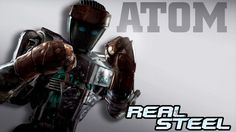
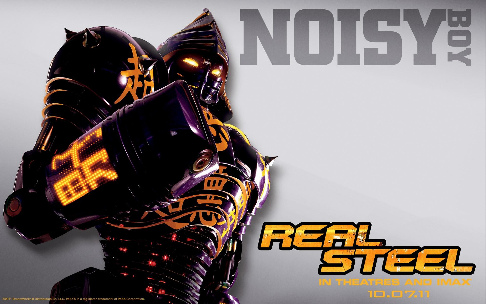
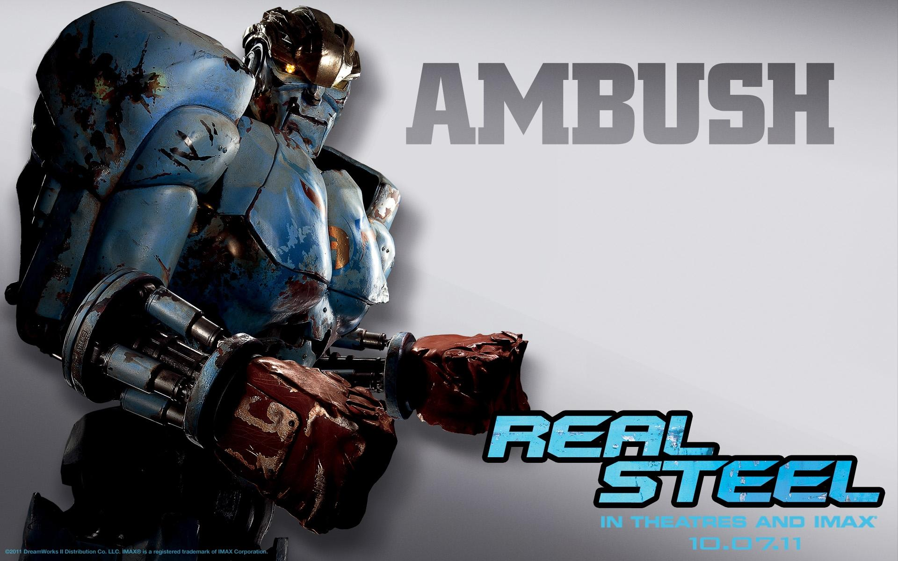
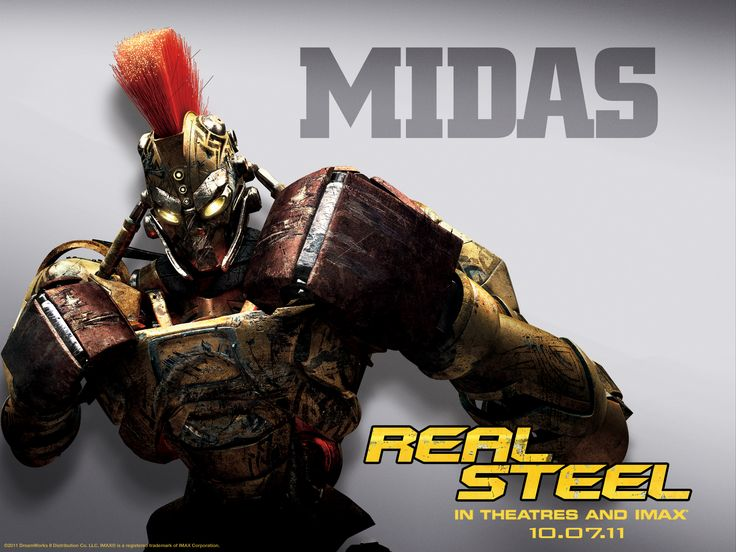

Атом — это культовый робот-андроид второго поколения из научно-фантастического фильма «Живая сталь» (Real Steel). Изначально созданный как спарринг-робот для отработки ударов (из-за чего у него нет полноценного «лица» или агрессивной брони), он стал главным героем картины.

NoisYBoy — культовый робот из фильма «Живая сталь» (2011), созданный японским инженером Таком Машидо. В лиге WRB он одержал 15 побед при единственном поражении. Его главная фишка — меняющиеся светодиодные надписи на лице (например, «KA-BOOM!») и встроенный голосовой набор приемов.

Эмбуш (Ambush) — первый робот главного героя Чарли Кентона, участвующий в боях в начале фильма «Живая сталь» (Real Steel).

Майдас (англ. Midas) — это один из сильнейших и самых опасных роботов в фильме «Живая сталь» (Real Steel), выступающий в боях без правил. Отличается агрессивным стилем, имеет золотисто-чёрную окраску и оснащён лезвиями. Он известен тем, что жестоко победил робота Нойзи Боя, оторвав ему голову.